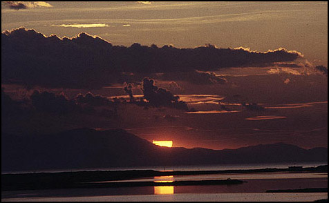
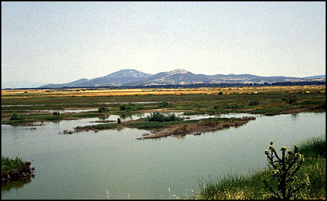

Οι υγρότοποι αν και καλύπτουν ένα πολύ μικρό ποσοστό στην ευρωπαική γη, εν τούτοις φιλοξενούν μία εντυπωσιακή ποικιλία σε είδη φυτών και ζώων, τα οποία δεν είναι δυνατό να βρεθούν πουθενά αλλού. Στο παρελθόν οι προσπάθειες για την προστασία των υγροτόπων συχνά επικεντρωνόταν στην αξία της χλωρίδας και της πανίδας και ιδιαίτερα στα μεταναστευτικά πουλιά. Αυτό είχε σαν αποτέλεσμα να επικρατήσει η άποψη στους διοικούντες και στις τοπικές κοινωνίες, ότι για το "χατήρι των πουλιών" η προστασία των υγροτόπων καθυστερεί την ανάπτυξη. Φυσικά η ενημέρωση και ευαισθητοποίηση του κοινού για τις βασικές και κρίσιμες λειτουργίες που επιτελούν οι υγρότοποι δεν προβλήθηκε όσο έπρεπε.
Οι υγρότοποι επηρεάζονται σοβαρά και απειλούνται από τα έργα και τις δραστηριότητες που επιτελούνται στα ποτάμια και στη λεκάνη απορροής τους. Οι απειλές αυτές περιλαμβάνουν τη ρύπανση των υδάτων, την έλλειψη γλυκού νερού εξ αιτίας των ανατροπών στο υδρολογικό σύστημα και την έλλειψη φερτών υλικών η οποία οδηγεί στη διάβρωση εδαφών. Μέχρι σήμερα στις περισσότερες περιπτώσεις των αναπτυξιακών έργων, οι περιβαλλοντικοί όροι των επιπτώσεων των έργων καλύπτουν βραχυπρόθεσμα μόνο τις περοχές υλοποίησης και τα αρνητικά αποτελέσματά τους εμφανίζονται αργότερα.
Στη Μεσόγειο, η οποία ομολογουμένως είναι πυκνοκατοικημένη περιοχή και η οποία δέχεται ισχυρές πιέσεις από τα υλοποιούμενα αναπτυξιακά έργα / προγράμματα, θα πρέπει να εκπονηθούν ολοκληρωμένα διαχειριστικά σχέδια για να προστατευθούν και να διαχειριστούν οι εναπομείνατες υδάτινοι πόροι μεταξύ αυτών και οι υγρότοποι.`Ολα τα κράτη θα πρέπει να θέσουν προτεραιότητες στη χρήση των υδάτινων φυσικών πόρων με σκοπό να διατηρήσουν τα ποτάμια τους και τους υγροτόπους ώστε να προστατεύσουν τα παραγωγικά αυτά οικοσυστήματα.
Σήμερα η συνηθισμένη μέθοδος για την προστασία των υγροτόπων, είναι η δημιουργία Εθνικού Πάρκου όπου η ανθρώπινη δραστηριότητα είναι αυστηρά ελεγχόμενη και περιορισμένη. Πολλά από τα Πάρκα αυτά προστατεύονται από διεθνείς συμβάσεις. Η πιο σπουδαία σύμβαση που αφορά τους υγροτόπους είναι η Σύμβαση Ραμσάρ για τους Υγροτόπους Διεθνούς Σημασίας ιδιαίτερα ως ενδιαιτήματα των υδρόβιων πουλιών .
`Ολοι οι Μεσογειακοί υγρότοποι που έχουν εναπομείνει, ακόμη και αυτοί της Σύμβασης Ραμσάρ, αντιμετωπίζουν σοβαρότατες απειλές προερχόμενες από τον άνθρωπο. Ο ορθός σχεδιασμός των δράσεων θα μπορούσε να αποτρέψει το μεγαλύτερο μέρος της καταστροφής τους. Η πρόκληση είναι στο να επινοηθούν ξανά οι τρόποι που θα αξιοποιούν με αειφορικό τρόπο τα φυσικά υγροτοπικά οικοσυστήματα ώστε οι αξίες τους να αποδίδουν μακροπρόθεσμα. Για να επιτευχθεί αυτός ο στόχος θα πρέπει και η τοπική κοινωνία να αναγνωρίσει και να αποδεχθεί τη προσέγγιση αυτή με το σκεπτικό του μακροπρόθεσμου οφέλους. Ακόμα κρίνεται απαραίτητη η σύναψη συνεργασίων μεταξύ του ιδιωτικού και κρατικού φορέα .
Η διαχείριση της λεκάνης απορροής των συνοριακών ποταμών, ο σχεδιασμός ανάπτυξης των παράκτιων ζωνών και η ολοκληρωμένη διαχείριση των υδάτινων πόρων σε συνδυασμό με την προστασία των υγροτοπικών συστημάτων, αποτελούν τη μακροπρόθεση επένδυση για την αειφορική διαχείριση των υδάτινων πόρων όσο αφορά την ποιότητα αλλά και την ποσότητα.